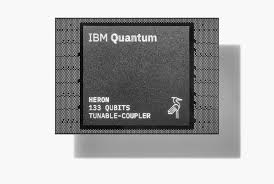

Date: December 15, 2023
In early December 2023, significant strides were made in quantum computing, with notable developments from leading technology companies.
On December 14, 2023, IBM unveiled its next-generation quantum processor, the IBM Heron, featuring 156 qubits. This processor is designed to enhance error reduction and performance, marking a substantial advancement in quantum computing capabilities. Additionally, IBM introduced the IBM Quantum System Two, a modular quantum computer architecture intended to support future quantum processors and facilitate the scaling of quantum systems. For more details, visit IBM's official announcement.
The U.S. Defense Advanced Research Projects Agency (DARPA) announced progress in its Utility-Scale Quantum Computing (US2QC) program. The initiative aims to develop a fault-tolerant prototype of a utility-scale quantum computer, with the goal of demonstrating that such a system can be constructed and operated as intended. For more information, visit DARPA's official announcement.
These developments underscore the rapid advancements in quantum computing, with both industry leaders and government agencies making significant contributions toward realizing practical and scalable quantum systems.